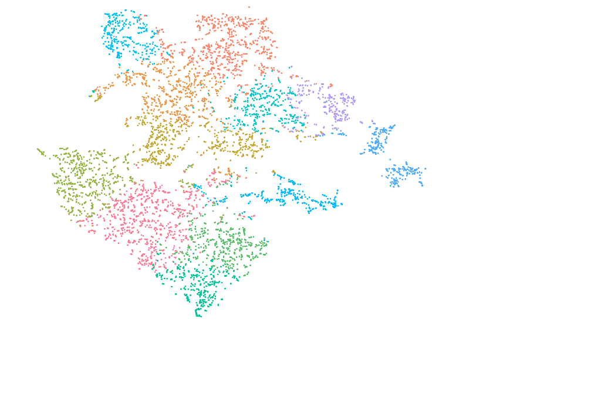

scRNASeq
Contents:
D: Cell Ranger/Seurat - Cells with genes <100 are filtered
E: Cell Ranger/Seurat - Cells with genes <100 are filtered
F: Cell Ranger/Seurat - Cells with genes <100 are filtered
G: Cell Ranger/Seurat - Cells with genes <100 are filtered
D: UMI/Seurat - Cells with genes <100 are filtered
E: UMI/Seurat - Cells with genes <100 are filtered
F: UMI/Seurat - Cells with genes <100 are filtered
G: UMI/Seurat - Cells with genes <100 are filtered
D: UMI/Seurat - Cells with genes <200 or >2500 are filtered
E: UMI/Seurat - Cells with genes <200 or >2500 are filtered
F: UMI/Seurat - Cells with genes <200 or >2500 are filtered
G: UMI/Seurat - Cells with genes <200 or >2500 are filtered
scRNASeq
Docs
»
CellRanger: Clustering and Supporting Plots
View page source
CellRanger: Clustering and Supporting Plots
¶
SIGAD1 Sample
¶
SIGAE1 Sample
¶
SIGAF1 Sample
¶
SIGAG1 Sample
¶
SIGAD1 Sample Clusters
¶
SIGAE1 Sample Clusters
¶

SIGAF1 Sample Clusters
¶
SIGAG1 Sample Clusters
¶


{kind=link}